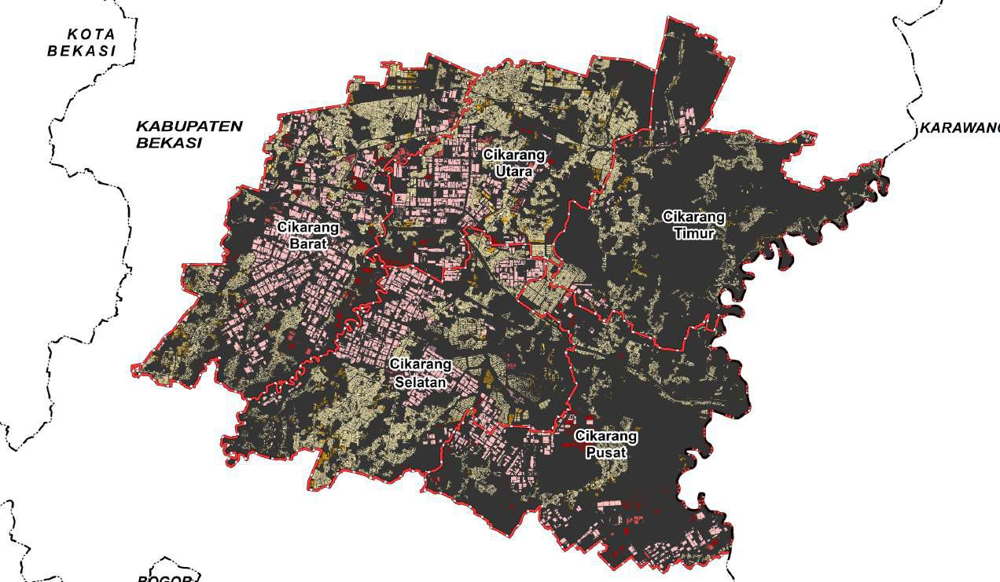

ThesisIndustrial–Settlement Spatial Pattern & Association
Cikarang, Bekasi · 2024
Detected industrial and residential building footprints from Google Open Building, then ran kernel-density and nearest-neighbour distance analysis to find where the two land uses concentrate — and collide.
- Google Earth Engine
- Python
- IBM SPSS